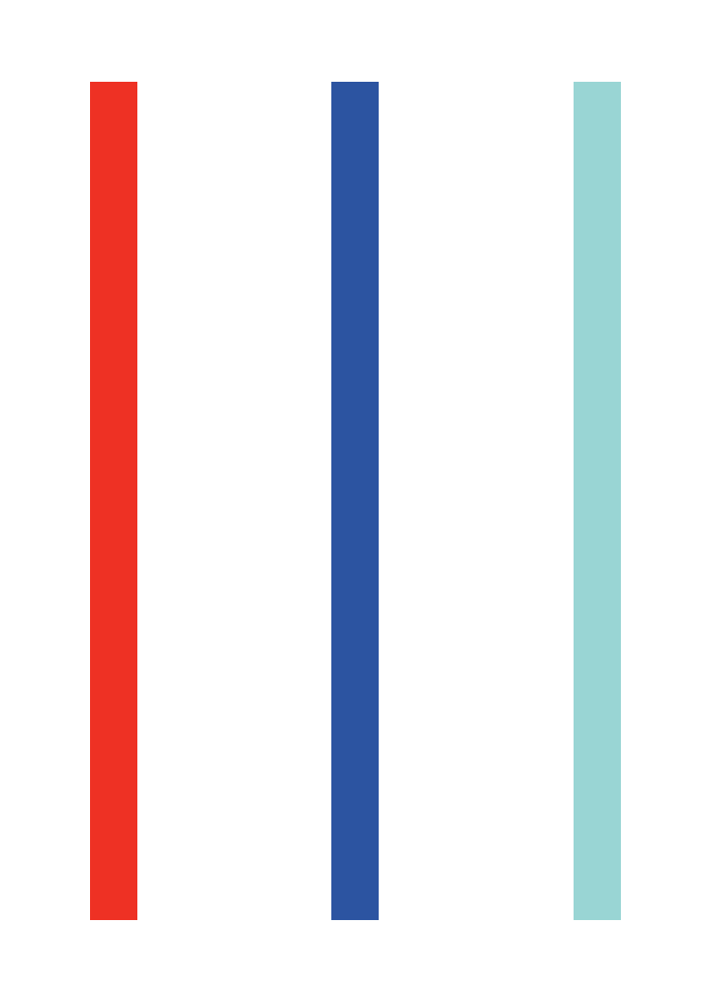

Primavera, 2022
Coimbra, Portugal
Coimbra, Portugal
Nº1
Trimestral
Revista de cultura tipográfica
Trimestral
Revista de cultura tipográfica


Thirteen Ways of Looking at a Typeface
Using Autoencoders to Generate Skeleton-based Typography
It was true. Liberated from monogamy, I became typographically promiscuous. I have since, I think, learned to modulate my behavior — like any substance abuser, I learned that binges are time-consuming, costly, and ultimately counterproductive — but I've never gone back to five-typeface sobriety. Those thousands of typefaces are still out there, but my recovery has required that I become more discriminating and come up with some answers to this seemingly simple question: why choose a particular typeface? Here are thirteen reasons.
Some typefaces are just perfect for certain things. I've specified exotic fonts for identity programs that work beautifully in headlines and even in text, but sooner or later you have to set that really tiny type at the bottom of the business reply card. This is what Franklin Gothic is for. Careful, though: some typefaces work too well. Frutiger has been used so much for signage programs in hospitals and airports that seeing it now makes me feel that I'm about to get diagnosed with a brain tumor or miss the 7:00 to O'Hare.
I've heard of several projects where the designer found a font that was created the same year the client's organization was founded. This must give the recommendation an aura of manifest destiny that is positively irresistible. I haven't had that luck yet, but still try to find the same kind of evocative alignment. For instance, I was never a fan of Aldo Novarese's Eurostyle, but I came to love it while working on a monograph on Eero Saarinen: they both share an expressiveness peculiar to the postwar optimism of the 1950's.
Once I saw a project in a student portfolio that undertook the dubious challenge of redesigning the Tiffany's identity. I particularly disliked the font that was used, and I politely asked what it was. "Oh," came the enthusiastic response, "that's the best part! It's called Tiffany!" On the other hand, Bruce Mau designed Spectacle, the book he created with David Rockwell, using the typeface Rockwell. I thought this was funny.
Once I was working on a project where the client group included some very strong-minded architects. I picked Cheltenham, an idiosyncratic typeface that was not only well-suited to the project's requirements, but was one of the few I know that was designed by an architect, Bertram Goodhue. Recently, I designed a publications program for a girls' school. I used a typeface that was designed by a woman and named after another, Zuzana Licko's Mrs. Eaves. In both cases, my clients knew that the public would be completely unaware of the story behind the font selection, but took some comfort in it nonetheless. I did too.
Sometimes a typeface is already living on the premises when you show up, and it just seems mean to evict it. "We use Baskerville and Univers 65 on all our materials, but feel free to make an alternate suggestion." Really? Why bother? It's like one of those shows where the amateur chef is given a turnip, a bag of flour, a leg of lamb and some maple syrup and told to make a dish out of it. Sometimes it's something you've never used before, which makes it even more fun.
And sometimes it's something you've never used before, for good reason. "We use ITC Eras on all our materials." "Can I make an alternate suggestion?" "No." This is when blind embossing comes in handy.
Whenever I want to make words look straightforward, conversational, and smart, I frequently consider Futura, upper and lower case. Why? Not because Paul Renner was straightforward, conversational, and smart, although he might have been. No, it's because 45 years ago, Helmut Krone decided to use Futura in Doyle Dane Bernbach's advertising for Volkswagen, and they still use it today. One warning, however: what reminds you of something may remind someone else of something else.
Cyrus Highsmith's Novia is now commercially available. He originally designed it for the headlines in Martha Stewart Weddings. Resistance is futile, at least mine is.
About 10 years ago, I was asked to redesign the logo for New York magazine. Milton Glaser had based the logo on Bookman Swash Italic, a typeface I found unimaginably dated and ugly. But Glaser's logo had replaced an earlier one by Peter Palazzo that was based on Caslon Italic. I proposed we return to Caslon, and distinctly remember saying, "Bookman Swash Italic is always going to look ugly." The other day, I saw something in the office that really caught my eye. It was set in Bookman Swash Italic, and it looked great. Ugly, but great.
Tibor Kalman was fascinated with boring typefaces. "No, this one is too clever, this one is too interesting," he kept saying when showed him the fonts I was proposing for his monograph. Anything but a boring typeface, he felt, got in the way of the ideas. We settled on Trade Gothic.
In design as in fashion, nothing beats bespoke tailoring. I've commissioned custom typefaces from Jonathan Hoefler and Tobias Frere-Jones and Joe Finocchiaro, and we're currently working with Matthew Carter and Chester. It is the ultimate indulgence, but well worth the extra effort. Is this proliferation? I say bring it on.
Sometimes I think that Massimo Vignelli may be using too many typefaces, not too few. A true fundamentalist requires a monotheistic worldview: one world, one typeface. The designers at Experimental Jetset have made the case for Helvetica. My partner Abbott Miller had a period of life he calls "The Scala Years" when he used that typeface almost exclusively. When the time is right, I might make that kind of commitment myself..
Princeton Architectural Press is about to publish a collection of essays I've written, many of which first appeared here on Design Observer. I wanted it to feel like a real book for readers — it has no pictures — so I asked Abbott to design it. He suggested we set each one of the 79 pieces in a different typeface. I loved this idea, but wasn't sure how far he'd want to go with it. "What about the one called 'I Hate ITC Garamond?'" I asked him. "Would we set it in ITC Garamond?" He looked at me as if I was crazy. "Of course," he said.
The book is beautiful, by the way, and not the least bit slutty.
Type Design is a domain that multiple times has profited from the emergence of new tools and technologies. The transformation of type from physical to digital, the dissemination of font design software and the adoption of web typography make type design better known and more accessible. This domain has received an even greater push with the increasing adoption of generative tools to create more diverse and experimental fonts.
Nowadays, with the application of Machine Learning to various domains, typography has also been influenced by it. In this work, we produce a dataset by extracting letter skeletons from a collection of existing fonts.
Then we trained a Variational Autoencoder and a Sketch Decoder to learn to create these skeletons that can be used to generate new ones by exploring the latent space. This process also allows us to control the style of the resulting skeletons and interpolate between different characters. Finally, we developed new glyphs by filling the generated skeletons based on the original letters’ stroke width and showing some applications of the results.
Keywords: Type Design · Variational Autoencoder · Skeleton-basis Typography
Jéssica Parente
Luís Gonçalo
Tiago Martins
João Miguel Cunha
João Bicker and
Penousal Machado

The design of type has undergone numerous changes over time . In the early years, typography was seen as a system made up of a series of rules. The artistic movements that arrived at the beginning of the twentieth century rejected the historical forms and transformed outdated aspects of visual language and expression. However, projects that combined software, arts and design only appeared a few years later with the proliferation of personal computers, allowing programming to reach a wider audience. Thanks to all these changes, the tools to design type changed, and new possibilities for typographic experimentation appeared, resulting in (i) grammar-based techniques that explore the principle of database amplification; (ii) evolutionary systems that breed design solutions under the direction of a designer; (iii) or even, Machine Learning (ML) systems that learn the glyphs features to build new ones. These computational approaches can also be helpful as a starting point of inspiration.
Most emerging fonts continue to be developed by type designers who study the shape of each letter and its design with great precision, despite the emergence of these new possibilities. Type design is a hugely complex discipline, and its expertise ensures typography quality. Moreover, with the proliferation of web typography and online reading, the use of variable and dynamic fonts has increased, allowing more options for font designers and font users. Additionally, visual identities created nowadays are becoming more dynamic.
Museums, institutions, organisations, events and media increasingly rely on this type of identity. Consequently, designers should adapt their work to these new possibilities by creating dynamic identities with animations and mutations. Even though new computer systems create expressive and out-of-the-box results, they do not have the knowledge of an expert. But this is also an advantage, allowing non-arbitrary exploitation that extends the range of possibilities.
It is necessary to create a balance to take advantage of the computational systems and the expert labour. Moreover, most generative systems that design type focus on the letters’ filling and don’t see the structure of a glyph as a variation parameter.
To overcome these limitations, we propose an Autoregressive model that creates new glyph skeletons by the interpolation of existing ones. Our skeleton-based approach uses glyphs skeletons of existing fonts as input to ensure the quality of the generated results. The division of the structure and the filling of the glyphs add variability to the results. Different glyphs can be created by just changing the structure or the filling. The proposed approach enables the exploration of a continuous range of font styles by navigating on the Autoencoder (AE) learnt latent space.
With the results of this approach, it is also possible to apply different filling methods that use the stroke width of the original letters to produce new glyphs. The remainder of this paper is divided into three sections. The following section, Related Work, analyzes related projects in the domain of computational typography with Artificial Neural Networks (ANNs). The second section, Approach, describes the construction of the used dataset and explains the training process. Then, in the Results section, we present and discuss the different exper- imentations performed and the obtained results. In this section, we also present a set of different possible applications of the outputs of our system. In the final section, Conclusion and Discussion, we draw some conclusions and lay out future work.

Over time, the methods and technologies available for type design have improved and designers have to evolve and adapt their process of thinking in accordance. Generative Adversarial Networks (GANs) have revealed impressive advances, presenting high-resolution images nearly indistinguishable from the real ones. In the typographic field, they are helpful when one wishes to obtain coherent glyphs in a typeface. When designing a typeface, one has to simultaneously seek an aesthetically appealing result and coherence among the different glyphs. This can be facilitated by exploring the similarities between the same letter present across diverse fonts, and the transferred stylistic elements within the same font. Balashova et al. develop a stroke-based geometric model for glyphs, a fitting procedure to re-parametrise arbitrary fonts to capture these correlations.
The framework uses a manifold learning technique that allows for interactively improving the fit quality and interpolating, adding or removing stylistic elements in existing fonts. Campbell and Kautz develop a similar contour-based framework allowing the editing of a glyph and the propagation of stylistic elements across the entire alphabet. Phan et al. and Suveeranont and Igarashi present two different frameworks that give one or more outline-based glyphs of several characters as input, producing a complete typeface that bears a similar style to the inputs. Rehling and Hofstadter use one or more grid-based lowercase letters to generate the rest of the Roman alphabet, creating glyphs that share different style features. Azadi et al. develop an end-to-end stacked conditional GAN model to generate a set of highly-stylised glyph images following a consistent style from very few examples.

In this section, we present the developed model that generates new letter skeletons by interpolating existing ones. This process allows us to control the style of the resulting font by navigating the latent space. We explain all the steps taken, from the data collection and editing, passing through the development of the network architecture until the experimentation and analysis of the results.
One of the most important aspects of our approach is the collection and pre-processing of the dataset. We compile a collection of fonts in TTF font format with different weights from Google Fonts. This dataset is composed of five different font styles, Serif, Sans Serif, Display, Handwriting and Monospace. We opted not to use handwriting and display fonts because they were largely distinct from the rest, which is not desirable for our approach. Their ornamental component, sometimes not even filled, complicates the extraction of a representative skeleton. We only worked with 26 characters (A-Z) of the Latin alphabet in their capital format. We believed that, as a work in progress, it would be best to create a dataset with a few characters. By just using capital letters, we are reducing the complexity of the approach.
After selecting the fonts, we remained with 2623 TTF files. Then, we use the library Skelefont to extract the skeleton of a font file. It applies the Zhang-Suen Thinning Algorithm to derive the structural lines of a binary image. This library also allows the extraction of the points of the skeletons as well as the connections between them. It can also calculate the distance between the points and their closest borderline pixel, returning the stroke width of the original glyph at each of these points. For each font, we rasterise the vectors that compose the skeleton of each glyph into a 64x64px black and white image. We also save all points’ positions and stroke width of the original glyph in a file to use later to generate the filling of the glyphs. Then, we repeat the process for the 26 letters of the alphabet (capital letters of the Latin alphabet only).
In this section, we present the developed model that generates new letter skeletons by interpolating existing ones. This process allows us to control the style of the resulting font by navigating the latent space. We explain all the steps taken, from the data collection and editing, passing through the development of the network architecture until the experimentation and analysis of the results.
One of the most important aspects of our approach is the collection and pre-processing of the dataset. We compile a collection of fonts in TTF font format with different weights from Google Fonts. This dataset is composed of five different font styles, Serif, Sans Serif, Display, Handwriting and Monospace. We opted not to use handwriting and display fonts because they were largely distinct from the rest, which is not desirable for our approach. Their ornamental component, sometimes not even filled, complicates the extraction of a representative skeleton. We only worked with 26 characters (A-Z) of the Latin alphabet in their capital format. We believed that, as a work in progress, it would be best to create a dataset with a few characters. By just using capital letters, we are reducing the complexity of the approach.
After selecting the fonts, we remained with 2623 TTF files. Then, we use the library Skelefont to extract the skeleton of a font file. It applies the Zhang-Suen Thinning Algorithm to derive the structural lines of a binary image. This library also allows the extraction of the points of the skeletons as well as the connections between them. It can also calculate the distance between the points and their closest borderline pixel, returning the stroke width of the original glyph at each of these points.
For each font, we rasterise the vectors that compose the skeleton of each glyph into a 64x64px black and white image. We also save all points’ positions and stroke width of the original glyph in a file to use later to generate the filling of the glyphs. Then, we repeat the process for the 26 letters of the alphabet (capital letters of the Latin alphabet only).
The proposed model consists of a Conditional Variational Autoencoder (VAE) and an Autoregressive sketch decoder. We used a VAE instead of a regular AE to allow us to manipulate the latent vectors more easily. The output of the VAE are the parameters of distribution instead of vectors in the latent space. Moreover, the VAE imposes a constraint on this latent distribution forcing it to be a normal distribution which makes sure that the latent space is regularised. Therefore, we can create smoother transitions between different fonts when we sample the latent space moving from one cluster to the other. The Conditional part of the model allows us to input which letter we are encoding and decoding allowing us to manipulate better which letter we are creating. Finally, as all the letters share the same latent space we can also explore the skeletons between different letters.
The Figure shows a diagram of the architecture used. In summary, the encoder employs a Convolutional Neural Network (CNN) that processes the greyscale images and encodes them into two 64-D latent vectors which consist of a set of means (μ) and standard deviations (σ) of a Gaussian representation. Through experimentation, we found that size 64 for the latent code presents the best results for our approach as it is a good trade-off, allowing us to compress all the characteristics of the letter while keeping its tractability. Then, using the mean and standard deviation we take a sample from the Gaussian representation z to be used as input for both decoders, the image decoder and the sketch decoder.
The image decoder consists of a set of convolutional transpose layers that receive the z vector and decodes it into a greyscale image which is compared with the original input. The sketch decoder consists of an LSTM with dropout that transforms the z vector into a sequence of 30 points creating a single continuous path. This path is rasterised using a differentiable vector graphics library to produce an output image. This library allows converting vector data to a raster representation while facilitating backpropagation between the two domains. In the rasterisation process, we take the sequence of 30 x and y values and transform them to canvas coordinates. Then, we create a line that connects all points following the same order they are returned from the sketch decoder. The width of this path needs to be carefully selected to match the width of the original skeleton. If the width of the path is thinner than in the original images, at some part of the training process, the network stops trying to compose the whole letter and starts to fill the width of the letter in a zig-zag manner. However, if the line is thicker than in the original images we lose detail in the final skeleton.
Finally, we render the produced path in a canvas as a greyscale image that is compared with the original image. Although the standard VAE works at the pixel level, the output of our sketch decoder is a sequence of points, thus allow- ing the generation of scalable vector graphics that allow easier manipulation of the generated skeletons without losing quality. The loss value is calculated in a similar way as in the standard VAEs. We calculate the Binary Cross Entropy between the output images of the image decoder and the original inputs. We also calculate the Kullback-Leibler Divergence to allow a regularised distribution of the latent space. Finally, we compute the Binary Cross Entropy between the original inputs and the output of the sketch decoder. To obtain the final loss value we add the three values together.
António Simões, Ana Ferreira, João Perdiz, Pedro Costa
200
2023